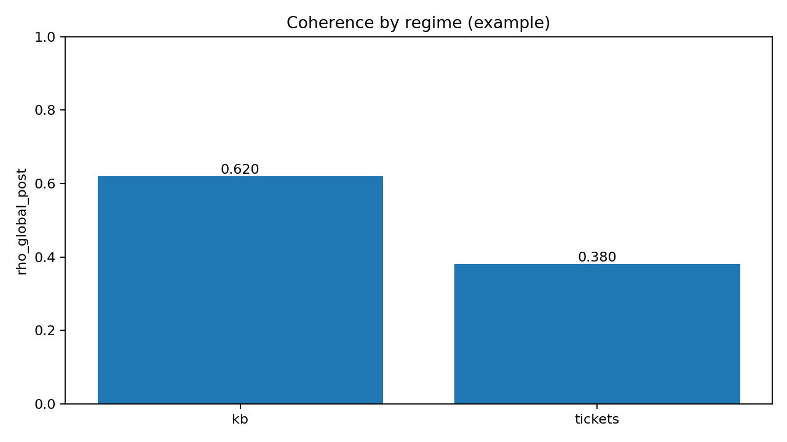
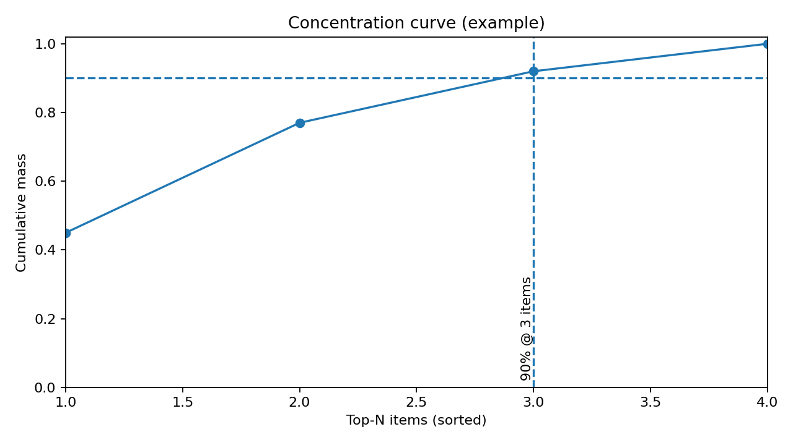

Vector DB coherence (from retrieval results)¶
This adapter analyzes a set of retrieval hits (e.g., from a vector database) and answers:
- Which regimes dominate the retrieved set? (e.g.,
namespace,tenant,source, …) - How concentrated is the set? (e.g., “how many items explain 90% of the mass?”)
If you’re coming from outside “advanced computation”: think of this as a retrieval audit that turns a pile of ranked results into a small, explainable report.
If you ever see PowerShell “doing weird things” when you paste commands, start with Running examples on Windows/macOS/Linux.
Why run this¶
Run this when you want to validate that:
- Your retrieval isn’t silently dominated by one bucket (a single namespace/tenant/source)
- Small parameter changes (like
tau) don’t create unstable, misleading concentration
Input: retrieval export (.jsonl)¶
The demo input is a JSON Lines file (one JSON object per line) containing:
id(string)score(float)- a regime field such as
namespace
Example line:
Run the demo¶
1) Set paths¶
2) Create a tiny demo input (optional)¶
If you already have a retrieval export, skip this.
New-Item -ItemType Directory -Force (Split-Path $in) | Out-Null
@'
{"id":"doc_001","score":0.82,"namespace":"kb","source":"handbook"}
{"id":"doc_002","score":0.63,"namespace":"kb","source":"manual"}
{"id":"doc_101","score":0.77,"namespace":"tickets","source":"ops"}
{"id":"doc_102","score":0.12,"namespace":"tickets","source":"ops"}
'@ | Set-Content -Encoding utf8 $in
mkdir -p "$(dirname "$in")"
cat > "$in" <<'JSONL'
{"id":"doc_001","score":0.82,"namespace":"kb","source":"handbook"}
{"id":"doc_002","score":0.63,"namespace":"kb","source":"manual"}
{"id":"doc_101","score":0.77,"namespace":"tickets","source":"ops"}
{"id":"doc_102","score":0.12,"namespace":"tickets","source":"ops"}
JSONL
3) Run the example¶
What you should see¶
Artifacts are written to:
out/vector_db_demo/
Inspect the artifacts (recommended)¶
Why: this is the fastest way to verify the run produced real numbers and to find the CSV files you can open in Excel / pandas.
Expected output (example)¶
[out] ...\out\vector_db_demo
[tail] items_to_cover_90pct=3
Top regimes by rho_global_post:
1. kb rho_post=0.619658
2. tickets rho_post=0.380342
Compare two tau values (concentration delta)¶
Why: check whether your concentration headline is stable.
What you should see:
- Two sub‑runs under
out/vector_db_delta/(one per tau) - A headline like:
Plots (optional, but great for presentations)¶
If you want charts, install matplotlib:
Then generate plots for any output folder:
This writes images under <out>/plots/.
Example charts (from the tiny demo input):


Common pitfalls¶
- PowerShell is not Python. If you type
import pandas as pdatPS C:\...>it will fail. python - <<'PY'is bash‑only. On Windows PowerShell, use the here‑string pattern fromrunning_examples.md.- If you see
Unable to initialize device PRN, you likely ranprint(...)in PowerShell instead of Python.